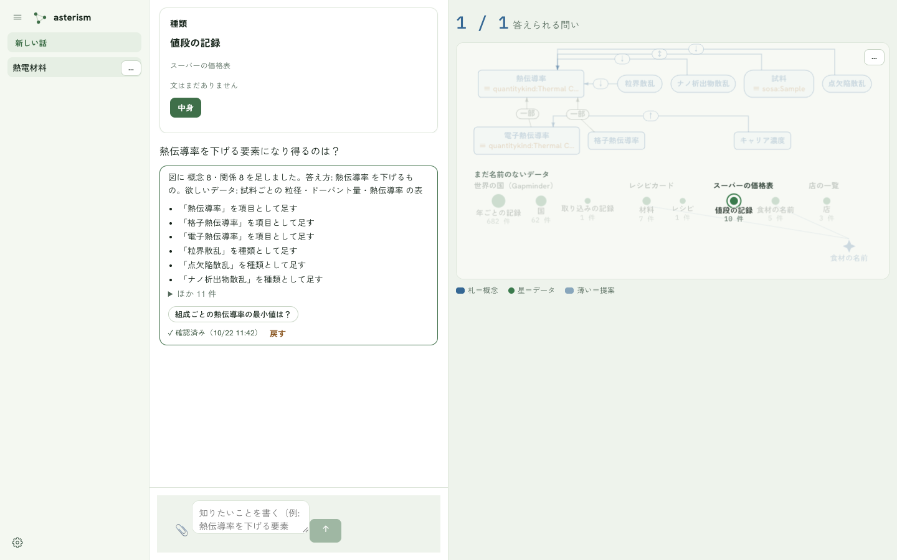
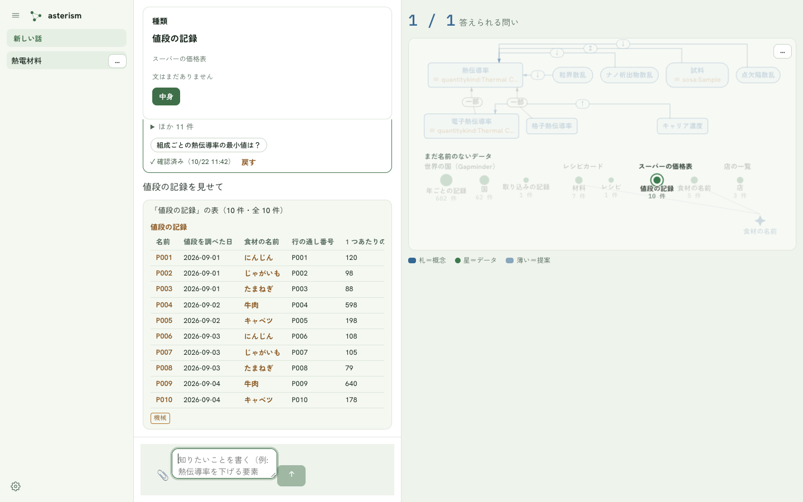

見る — 点を押してデータを見る・「見せて」で表
1 件ずつのページや、カード・見せ方を選ぶ画面はありません。見るには 2 つの方法があります。
点を押す
知識グラフの緑の丸（データの種類）を押すと、チャットの先頭に 1 枚が出ます。下の「データ」のタブには、その種類の行が 20 件まで表で出ます。知識グラフの青い丸（用語）を押すと、その用語に結ばれた各データの表が並びます。「文」のタブでは、その点についての文を 1 行ずつ見られます（知識グラフ）。


「…を見せて」で表
チャットに書くと、表で返ります。
- 例: 「値段の記録を見せて」「試料を見せて」
- 公開済みの種類・用語の名前に、「見せて」「一覧」「表」を付けて書きます
- AI は使いません。決まった型で、20 行までの表を返します（足りないときは「ほか N 件」と出ます）
- 用語を書いたときは、その用語に入っている種類のうち最初の 1 つの表です
- 該当する行がないときは「該当する行はありません」と出ます
- 公開済みのデータだけが対象です


答えてほしいとき
数や最大値を知りたいときは、「見せて」でなく「答えて」で書きます。出どころつきの答えが返ります（質問する）。